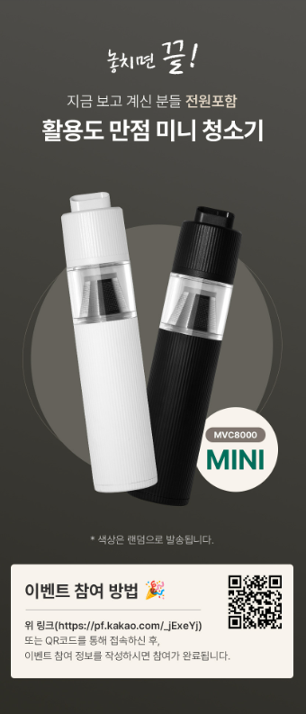
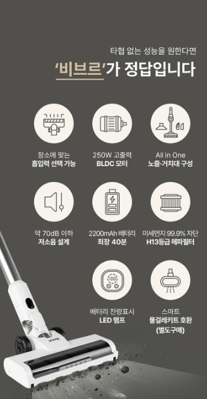

비브르 무선청소기 현재 판매 가격 확인
판매 시점에 따라 가격과 할인 혜택, 구성품이 달라질 수 있으니 실제 판매 페이지에서 최신 조건을 확인하세요.
비브르 무선청소기 최저가 확인하기 →1. 비브르 무선청소기는 어떤 제품일까?
비브르 무선청소기는 전원선을 콘센트에 연결하지 않고 충전된 배터리로 사용하는 스틱형 청소기입니다. 유선청소기처럼 방을 이동할 때마다 코드를 바꿔 꽂지 않아도 되기 때문에 필요한 순간 바로 꺼내 짧고 자주 청소하기 편리합니다.
거실과 침실 바닥에 떨어진 머리카락, 식탁 주변의 작은 부스러기, 소파 아래에 쌓이는 생활 먼지처럼 반복적으로 발생하는 오염을 빠르게 정리할 때 활용하기 좋습니다. 구성품에 따라 연장관이나 브러시를 교체하면 가구 사이와 창틀, 소파 틈, 차량 내부까지 청소 범위를 넓힐 수 있습니다.

2. 흡입 성능과 바닥 청소 능력
무선청소기의 핵심은 바닥에 있는 먼지와 이물질을 얼마나 빠르고 안정적으로 흡입하는지에 있습니다. 하지만 최대 흡입력 수치만으로 실제 청소 성능을 모두 판단하기는 어렵습니다. 모터에서 발생한 흡입력이 연장관과 먼지통, 필터를 통과하는 동안 얼마나 안정적으로 유지되는지도 중요합니다.
생활 먼지와 머리카락은 일반 흡입 단계로 정리하고, 카펫이나 현관 주변의 무거운 이물질은 강한 모드를 사용하는 방식이 효율적입니다. 흡입 단계를 조절할 수 있다면 필요 이상으로 배터리를 소모하지 않으면서 오염이 심한 구간만 집중적으로 청소할 수 있습니다.
바닥 브러시의 움직임
바닥용 브러시는 먼지를 빨아들이는 통로이면서 바닥에 붙어 있는 머리카락과 미세먼지를 들어 올리는 역할을 합니다. 마루나 장판에서 부드럽게 움직이는지, 침대와 소파 아래로 충분히 낮게 들어가는지, 좌우 방향 전환이 자연스러운지 살펴보는 것이 좋습니다.
강한 모드는 청소 성능을 높이는 데 도움이 되지만 배터리 사용시간이 짧아질 수 있습니다. 평소에는 일반 모드로 청소하고 먼지가 많은 부분에만 강한 모드를 사용하는 것이 효율적입니다.
무선청소기 외에 이어폰과 TV, 카메라 등 다른 상품을 비교하고 있다면 싸게살래 가전·디지털 목록에서 구매 가이드를 확인할 수 있습니다.
가전·디지털 전체 상품 보기 →3. 배터리 사용시간과 충전 편의성
무선청소기의 실제 사용시간은 배터리 용량뿐 아니라 선택한 흡입 단계, 바닥 브러시 작동 여부, 배터리 상태와 사용 환경에 따라 달라질 수 있습니다. 판매 페이지에 표시된 최대 사용시간은 가장 약한 흡입 단계나 특정 시험 조건을 기준으로 표시될 수 있으므로 단계별 사용시간을 함께 확인하는 것이 좋습니다.
원룸이나 작은 방을 짧게 청소한다면 긴 사용시간이 반드시 필요하지 않을 수 있습니다. 반면 거실과 여러 방을 한 번에 청소하거나 카펫과 소파 주변까지 관리하려면 기본 모드에서 충분한 사용시간을 확보할 수 있는지 확인해야 합니다.
충전과 보관 방식
충전 어댑터를 본체에 직접 연결하는 방식인지, 거치대에 올려두면 충전되는 방식인지도 사용 편의성에 영향을 줍니다. 청소기를 자주 사용한다면 사용 후 바로 세워 보관하고 충전할 수 있는 방식이 편리합니다. 벽 고정형 거치대라면 설치할 위치와 벽면 상태도 미리 확인하는 것이 좋습니다.

4. 본체 무게와 실제 사용 편의성
무선청소기는 바닥에서 굴리는 제품처럼 보여도 사용 중에는 손목과 팔로 본체의 무게를 계속 지탱하게 됩니다. 특히 모터와 먼지통, 배터리가 손잡이 근처에 모여 있는 구조는 방향을 바꾸거나 높은 곳을 청소할 때 손목에 부담이 느껴질 수 있습니다.
총무게뿐 아니라 무게중심이 어디에 있는지, 바닥 브러시가 얼마나 자연스럽게 회전하는지, 손잡이 굵기가 손에 잘 맞는지도 중요합니다. 부모님이 사용하거나 손목 부담을 줄이고 싶다면 강한 흡입력만큼 조작 편의성을 중요하게 살펴보는 것이 좋습니다.
핸디형 활용
연장관을 분리해 핸디형으로 사용할 수 있는 구성이라면 소파 틈, 책상, 창틀과 자동차 좌석 주변을 청소할 때 편리합니다. 틈새 브러시와 솔형 브러시가 기본 구성에 포함되는지 확인하면 추가 액세서리를 별도로 구매하는 상황을 줄일 수 있습니다.
5. 먼지통과 필터 관리
흡입력이 좋은 무선청소기라도 먼지통과 필터를 제대로 관리하지 않으면 성능이 점차 떨어질 수 있습니다. 먼지통에 먼지가 가득 차거나 필터에 미세먼지가 쌓이면 공기 흐름이 막혀 흡입력이 약해지고 모터에 부담이 생길 수 있습니다.
먼지통은 사용 후 쉽게 분리할 수 있는지, 먼지를 손으로 직접 만지지 않고 비울 수 있는 구조인지 확인하는 것이 좋습니다. 내부에 머리카락이 걸리기 쉬운 구조라면 정기적으로 먼지통을 분리해 관리해야 합니다.
필터 세척 시 주의사항
물세척이 가능한 필터라도 세척 후 완전히 건조하지 않은 상태에서 장착하면 냄새나 성능 저하의 원인이 될 수 있습니다. 통풍이 잘되는 그늘에서 충분히 말린 뒤 장착하고, 물세척이 불가능한 모터나 전기 부품에는 물이 닿지 않도록 해야 합니다.
6. 사용 환경별 확인사항
| 원룸·소형 주택 | 보관 공간이 적으므로 거치 방식과 본체 크기, 짧은 청소에 적합한 조작 편의성을 확인하세요. |
|---|---|
| 아파트·다인 가구 | 여러 공간을 한 번에 청소할 수 있는 기본 모드 사용시간과 먼지통 용량을 확인하는 것이 좋습니다. |
| 반려동물 가정 | 털 흡입 성능과 브러시 롤 분리 여부, 머리카락과 털이 감겼을 때 관리가 편한지 살펴보세요. |
| 카펫 사용 가정 | 카펫 표면의 먼지를 들어 올릴 수 있는 회전 브러시와 강한 흡입 단계 지원 여부를 확인하세요. |
| 차량 청소 | 핸디형 전환과 틈새 브러시 구성, 차량 내부에서 들고 사용하기 편한 무게인지 확인하세요. |
7. 비브르 무선청소기 구매 전 체크리스트
- 판매 페이지의 정확한 모델명과 색상을 확인합니다.
- 일반 모드와 강한 모드의 단계별 사용시간을 확인합니다.
- 배터리 분리와 교체 가능 여부를 확인합니다.
- 바닥용 헤드와 틈새 브러시 등 기본 구성품을 확인합니다.
- 먼지통 분리와 비우는 방법이 편리한지 확인합니다.
- 필터 물세척 가능 여부와 교체 필터 판매 여부를 확인합니다.
- 거치대를 벽에 설치해야 하는지 확인합니다.
- 제품 무게와 손잡이, 헤드 회전 구조를 확인합니다.
- 보증기간과 고객센터, 교환 및 반품 조건을 확인합니다.
가전·디지털 제품을 함께 비교하고 있다면 갤럭시 버즈4 프로의 음질과 노이즈 캔슬링, 구매 전 확인사항도 살펴볼 수 있습니다.
갤럭시 버즈4 프로 구매 가이드 보기 →비브르 무선청소기 자주 묻는 질문
비브르 무선청소기는 어떤 공간에 사용하기 좋은가요?
거실과 방 바닥, 소파 주변, 가구 사이와 창틀처럼 생활 먼지가 자주 쌓이는 공간을 빠르게 청소할 때 활용하기 좋습니다.
흡입 단계가 강할수록 더 좋은가요?
강한 흡입 단계는 무거운 먼지와 카펫 청소에 도움이 되지만 배터리 소모가 빨라질 수 있습니다. 일반적인 바닥은 기본 모드로 청소하고 오염이 심한 부분만 강한 모드를 사용하는 방식이 효율적입니다.
표시된 최대 사용시간만 확인하면 되나요?
최대 사용시간은 특정 흡입 단계와 시험 조건을 기준으로 표시될 수 있습니다. 실제 사용시간은 강한 모드와 회전 브러시 사용 여부에 따라 짧아질 수 있으므로 단계별 사용시간을 함께 확인하세요.
필터는 얼마나 자주 관리해야 하나요?
청소 빈도와 먼지량에 따라 달라지지만 흡입력이 약해지거나 필터에 먼지가 많이 쌓였다면 관리가 필요합니다. 세척 가능한 필터는 사용설명서에 따라 세척하고 완전히 건조한 후 장착해야 합니다.